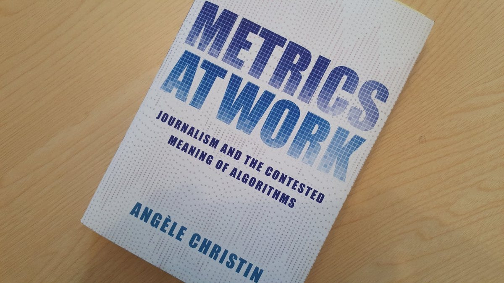
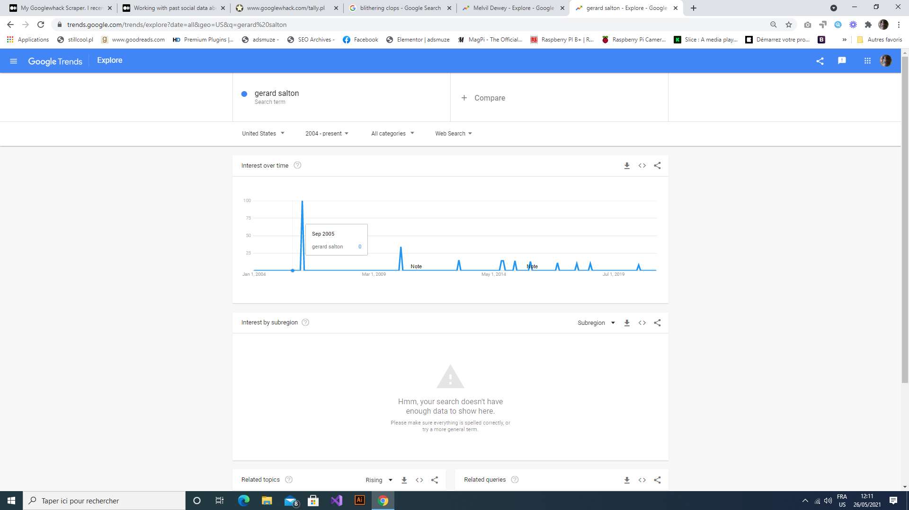
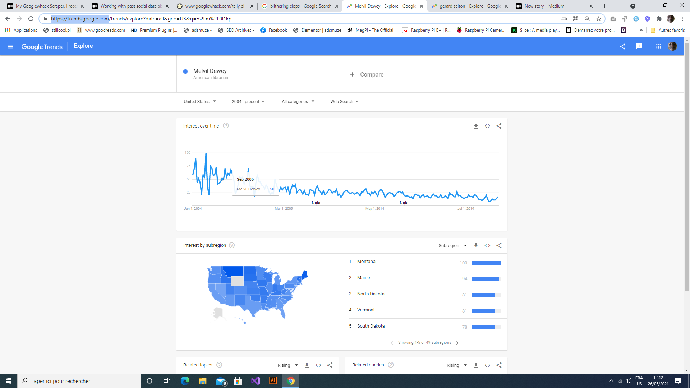
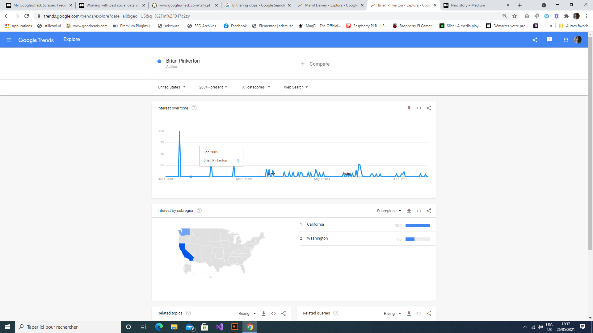
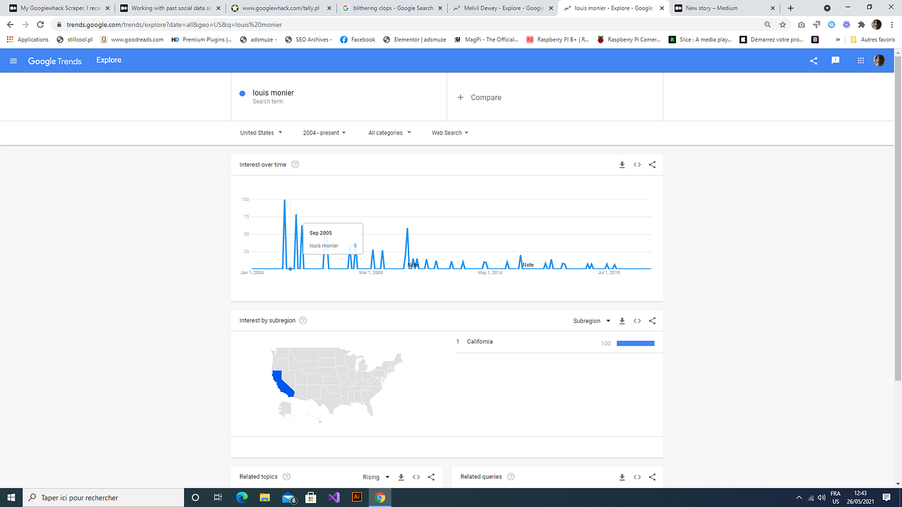

AI is not ignoring Bibliometrics


69,400,000 citations for books written by men
20,800,000 citations for books written by women
Women or men, they all are authors because they went through all the journey from ideation to a published book shipping us by this medium of book publishing, ideas, thoughts, memories, problems to solve, and solutions to apply.
For a processing and indexing solution like the one Book Dojo operate it is 90,200,000 rows of data to work on and you can clearly see that we have already a way of classifying these data by using the gender of the authors. Another key interesting exercise to do with these 90,200,000 rows of data is to measure how the gender of an author impacts the success of a book and its adoption.
880,000,000 rows of data where more computations are needed to discover the gender of the authors of the books cited. Yes, you have a lot of data about books out there to work on. Bibliometrics is a field that can still provide us insightful ideas and understanding of book reading experience. We think that this work of bibliometry that started Google is still a work that is worth doing and a scientific field. They are lot of data platform out there that could feed a bibliometric artificial intelligence system. Google trend is one of them. Reading a book today I tried to test some relation I guessed between books and google trends here are what I have discovered :




That’s what happens every time you read a book, you learn something and it is very likely that this thing you learn will be actionable and will lead you to act as I did with this article. I learned this data in this book cited in this article titled Working with past social data about books.
With Book Dojo’s data-driven books you will not only learn things you will also have datasets to use to achieve your goal be it a business goal or a personal goal. If you want to part of those who will read it and play with the data. You can use this